Fonctionnement général - Lien union automatique - Lien union 1 - Lien union 2 - Lien union 3 - Lien familial automatique - Lien familial manuel
Vous pouvez modifier l'aspect du lien de l'union entre deux personnes. Il suffit de faire un clic droit 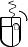 sur un lien d'union et de choisir la forme que vous souhaitez utiliser. Vous avez le choix entre : |
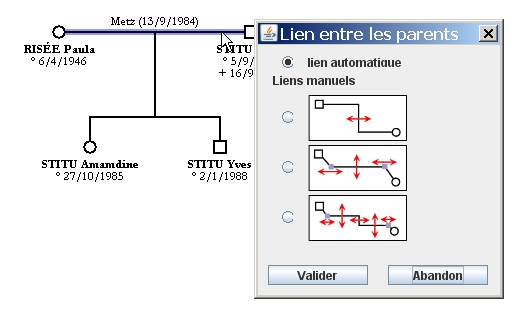 |
Vous pouvez aussi modifier le lien familial (entre les parents et les enfants) en faisant un clic droit et en choisissant une option de présentation. Vous avez le choix entre : |
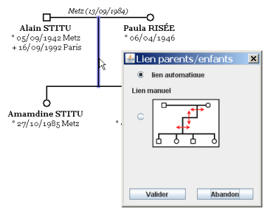 |
Certaines parties des liens sont modifiables manuellement.
Il suffit de cliquer sur un segment de droite ou sur un point pour le déplacer. Quand vous déplacez une personne, le lien conserve ses proportions. Quand vous déplacez une personne, les points conservent la position qu'ils ont par rapport à la personne la plus proche.
Le lieu et la date de l'union se positionnent toujours à mi-distance des deux parents et au-dessus du lien.
Ce lien se détermine automatiquement à partir des deux parents. Le trait vertical est toujours à mi-distance des deux parents.
Par rapport au lien automatique, ce lien permet de positionner manuellement le segment vertical. Exemples :
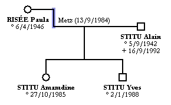 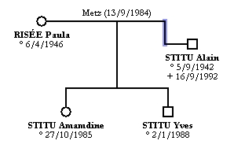
Vous pouvez placer le segment horizontal où vous voulez, au-dessus du parent le plus haut, entre les parents ou en dessous du parent le plus bas. De plus, vous pouvez déplacer les deux points entre segment horizontal et segment vertical afin que le segment qui part du parent soit oblique. Exemples :
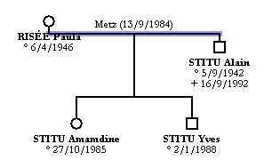 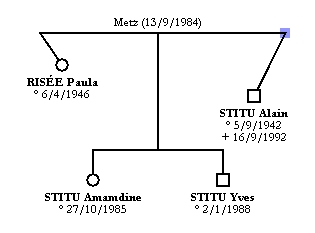 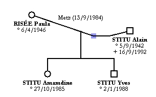
Ce lien est celui qui offre le plus de possibilités de modifications. Vous pouvez déplacer trois segments et deux points. Exemples :
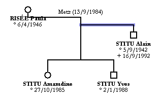 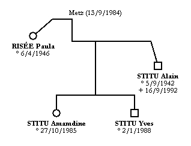 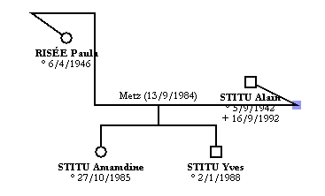
Ce lien se détermine automatiquement à partir de la famille.
Vous pouvez déplacer les 3 segments suivant vos envies. Le logiciel limite certains mouvements pour que :
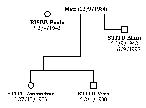
Les exemples qui figurent sur cette page ne sont pas forcément à reproduire, ils servent à illustrer les possibiltés du logiciel.